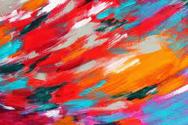

Realism
|
Still life
|
Zentangles/Mandalas
|
Illustration & cartoons
|
Abstract art
|
Pop Art
|
Watercolour
Here's some resources for "Abstract art"!

5 Tips for Making Abstract Art
5 EASY ABSTRACT PAINTING TECHNIQUES for BEGINNERS
Musical tracks for creativity
10 artists and what music they listen to
Learn about abstract art
Abstract painting for beginners- In acrylics
8 Abstract art techniques for the beginner
900+ Abstract Art ideas - Pinterest
Abstract Painting Courses
30 ways to make abstract art projects
What makes a good abstract painting?
l3 Principles for Painting Abstracts that Engage / Art with Adele
First Steps in Abstract Painting / Art with Adele
6 things you should know as a novice abstract painter
Here's some more things that will help you on your learning journey!(click here)